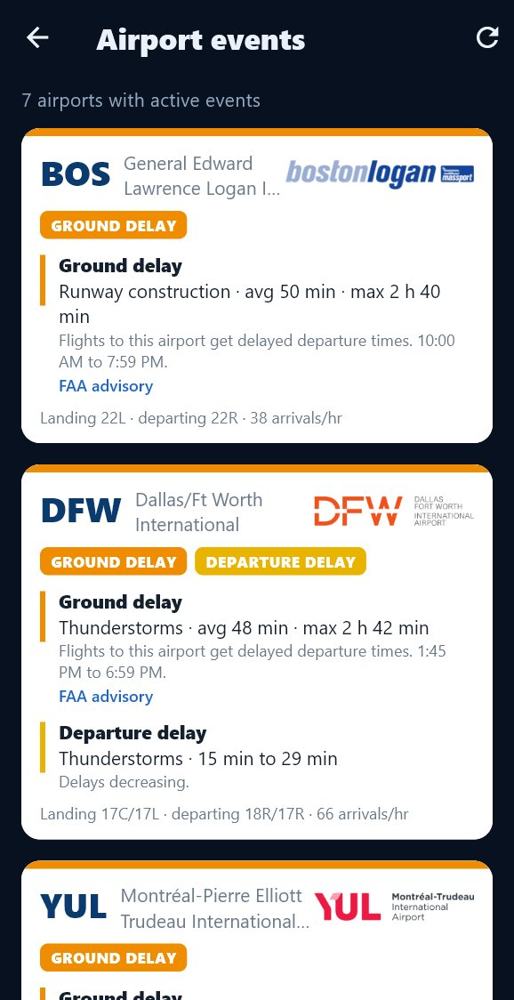
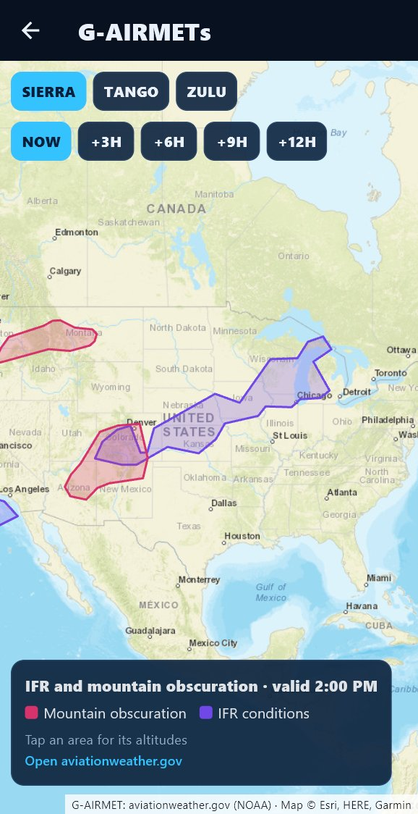
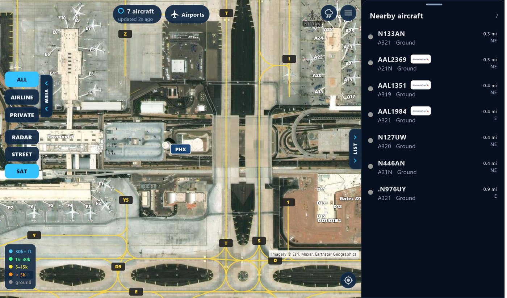

Free Android app · Version 1.0.7 · What's new
New: POINT. Hold your phone up to the sky and see every plane labelled →Live air traffic in your pocket.
Every plane around you on a live map, where it's going and when it lands, a photo of the actual aircraft, the weather on the way and 9,000+ airports. No account, no ads, no subscriptions.

New in 1.0.7 · POINT
Point your phone at the sky. Know every plane.
Hear a jet overhead and wonder where it's going? Tap the bullseye at the top of the map and hold your phone up. The camera view labels every aircraft in the sky with its flight, altitude and distance, right on top of the plane itself. It's the biggest thing we've ever added to Flight Radar, and honestly it still feels a bit like magic.
- Labels that sit on the plane. Your GPS position, the phone's compass and gyro, and the camera's own field of view put each label where the aircraft really is. Positions are moved on to this very second, so the tags keep up with fast jets.
- Aim and identify. The plane nearest the crosshair lights up, with its type, altitude, distance and speed in a card at the bottom.
- Tap to dive in. Tap any label, or the card, for the full flight view: route, airline, a photo of the actual aircraft and time to landing.
- See farther. Pinch or tap 1× / 2× / 5× to zoom the camera on distant traffic, and pick 10, 25 or 50 miles.
- Hold it any way. Portrait or landscape. If the compass needs it, the app asks you to wave the phone in a figure 8.
Android phones with a camera and compass. Nothing is recorded: the camera picture never leaves your phone.
See it in action
A quick tour of the app
Real app screens · Download MP4
Features
Everything the desk display does, on your phone





Step by step
Watch how to install it
Flight Radar isn't in the Play Store yet, so you install it straight from this page. It takes about a minute.
Install
Up and running in a minute
Open this page on your phone and follow the steps. Android asks you to confirm because the app comes from a website rather than the Play Store.
You'll need
- An Android phone or tablet running Android 7 or later
- An internet connection (Wi-Fi or mobile data)
- 1Tap Download for Android below. If Chrome warns that the file might be harmful, tap Download anyway.
- 2Open the download and tap Install. The first time, Android asks you to allow installs from Chrome: tap Settings, turn on Allow from this source, then go back.
- 3If Play Protect says it doesn't recognise the app, tap More details and Install anyway.
- 4Open Flight Radar and allow location to see the planes around you, or skip it and pick an airport.
Updating? Install the new version over the old one. Your settings and recent flights are kept.
Support the project
Flight Radar is free. Help keep it that way.
There are no ads, no subscriptions and no accounts. If you enjoy it, a small tip helps pay for future updates and new projects.
Chip in a couple of bucks
Any amount helps. Tap the button on your phone, or scan a code with another phone's camera.


More Flight Radar
Also on your PC and your desk
FAQ
Questions
Why isn't it in the Play Store?
Not yet. Until it is, the app is installed from this page. It's signed, so future versions install over it as updates.
Does it need an account or subscription?
No. It uses free public services for aircraft positions, routes, maps and weather, with no sign-up.
What does it do with my location?
Your location stays on your phone. The app sends the approximate area you're looking at to the data services so they can return nearby flights. Location is optional: without it, drag the map or pick an airport.
Where does the flight data come from?
Aircraft positions come from community ADS-B networks (adsb.lol, with adsb.fi as a backup), fed by volunteers' receivers. Routes come from adsb.im, flight history from the OpenSky Network, aircraft photos from Planespotters.net photographers, owners from the FAA registry, weather from aviationweather.gov and RainViewer, and airport data from OurAirports, the FAA and OpenStreetMap.
Why does a photo say "Stock" or "Type photo"?
When nobody has photographed that exact aircraft, the app shows the aircraft type in its maker's colours, or a Wikipedia photo of the type, and says so.
Can I use it to fly?
No. Flight Radar is for fun and curiosity. Routes, runways, frequencies and weather come from public and community sources and may be wrong or out of date. Not for navigation.